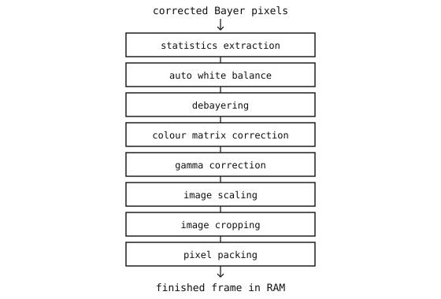

4.12. ISP 流水线¶
图像信号处理器（ISP）是将传感器输出的原始像素值转换成成品彩色图像的硬件流水线。传感器上的 像素级校正 是该流水线的最初几个阶段。在这些阶段运行之后，流水线的其余部分会对每一帧以固定的顺序进行颜色处理和输出格式化。

ISP 的颜色处理和输出阶段。流水线在进入下一阶段之前，会先对帧中的每个像素运行当前阶段。¶
4.12.1. 各个阶段¶
每个阶段依次应用一种定义明确的变换。顺序很重要——后面的阶段假定前面的阶段已经运行过，而且有少数几个阶段还会以前一帧的输出作为输入。
统计提取 从已校正的拜耳帧中测量每个区域的平均亮度和每个通道的总和。这些数值馈入自动曝光、自动增益和自动白平衡控制环路，随后这些环路会为下一帧更新传感器的设置。
自动白平衡增益 用每种颜色各自的乘数缩放每个拜耳像素——红色像素乘以 R 增益，绿色像素乘以 G 增益，蓝色像素乘以 B 增益——将场景的白参考推向中性灰，使记录下来的颜色看起来与人眼所见一致。这些乘数来自前一帧的 AWB 统计数据。
去拜耳化 从拜耳马赛克中重建每个像素缺失的两个颜色通道，将每像素单通道的原始数据转换成三通道 RGB。（参见 去拜耳化。）此阶段之后的所有处理都在 RGB 像素上运行，而不再在拜耳马赛克上运行。
颜色矩阵校正（CCM） 对每个 RGB 像素应用一个 3x3 矩阵乘法，把传感器原生的红绿蓝响应映射到标准颜色空间。每个传感器的滤光片都有各自的光谱响应，这并不完全符合任何标准的预期；该矩阵是一个针对每个传感器标定的变换，可将“传感器 RGB”转换为“标准 RGB”。
伽马校正 对每个通道应用一条非线性曲线，将线性的传感器信号压缩成与感知相匹配的编码。人眼对暗色调之间差异的察觉比对亮色调之间差异更敏感，因此一种把更多比特预算花在暗端的编码方式，能在给定位深下捕捉到更多可见细节。
图像缩放 将帧从传感器的原生分辨率调整为目标输出分辨率。大多数应用以低于传感器全部像素数的分辨率运行，缩小尺寸可同时降低后续所有环节的带宽压力和内存压力。
图像裁剪 提取缩放后帧的一个子矩形，并丢弃其外部的像素。用于采集感兴趣区域、匹配特定宽高比，或去掉应用不需要的边框。
像素打包 将每个通道的内部表示（通常每通道 10 或 12 位）转换成所选的输出格式，并把结果写入 RAM。
4.12.2. 控制环路反馈¶
第 1 和第 2 阶段构成一个跨越多帧的控制环路。从第 N 帧提取的统计数据告诉传感器该帧场景有多亮、其颜色平衡如何；自动曝光、自动增益和自动白平衡控制器利用这些数值为第 N+1 帧挑选新的曝光、增益和白平衡寄存器值。新值在下一帧读出时生效，新帧的统计数据返回，环路随之闭合。
对于不变的场景，环路会在几帧内收敛并保持在恒定设置。对于亮度或偏色发生变化的场景——例如摄像头从室内摇向阳光照射的窗户——环路会在若干帧内跟踪这一变化，用户会看到在过渡到新稳态过程中出现短暂的亮度或颜色漂移。
4.12.3. ISP 在何处运行¶
两种布置方式很常见。
片上 ISP 在传感器芯片内部运行整条流水线，并输出成品 RGB 图像。MCU 只负责收集结果。
片外 ISP 位于主机 MCU 或 SoC 中。传感器输出原始拜耳数据；MCU 的硅片（或其驱动代码）在把成品帧交给用户代码之前运行流水线。
这种划分会影响传感器能直接交给用户的输出格式。带有完整片上 ISP 的传感器允许用户从芯片支持的任何成品格式中选择。没有片上 ISP 的传感器只能输出拜耳数据，格式转换则在 MCU 的硅片或软件中进行。